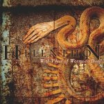

|
|
||
Hollenthon : With Vilest of Worms to Dwell (2001) |
|

http://www.hollenthon.com |
1. Y Draig Goch 3:54 |
9.4/10 |
|
"With vilest of worms to dwell" es el explícito título (se podría traducir algo así como "Morar con los más viles gusanos") del segundo álbum de la banda austríaca Hollenthon, liderada por el antiguo vocalista de Pungent Stench, Martin Schirenc. Aunque el álbum salió hace cuatro años, este es uno de esos discos que me pareció excelente en su momento, y que de vez en cuando trato de rescatar. El estilo, death metal sinfónico, tampoco es el habitual en estas páginas, puesto que ya sabéis que el black y el death metal no son mis géneros favoritos, pero este álbum me gustó mucho. El arranque de "Y Draig Goch" es rápido, espectacular y pomposo, algo que encajaría bien en los últimos discos de Therion, pero cuando entra la voz la base de death metal resulta innegable: sonidos orquestales, doble bombo, una voz desgarrada y extrema, cambios de ritmo y todo ello agitado, no batido, en un original cóctel muy bien llevado a cabo. "Woe to the Defeated" es un tema más lento, acompañado por inquietantes coros, que luego se acelera sobre el doble bombo y que culmina en un estribillo bastante pegadizo y un solo de guitarra llamativo y original que se te queda con facilidad. "Lords of Bedlam" comienza con una conocida pieza clásica, que luego se repite, convenientemente aderezada con las guitarras eléctricas y la batería, y luego marca un tempo lento y una atmósfera oscura, que se va haciendo más tenebrosa conforme la canción llega al final. En "To Kingdom Come" podemos escuchar coros señoriales, el estribillo más llamativo del disco, una voz femenina que pone algo de dulzura, y algunas aportaciones fantásticas de los violines, que aunque sampleados suenan bastante bien. "The Calm Before the Storm" tiene un cierto aire folk, quizás por la mezcla de sonidos de violines y los coros, menos clásicos que en el resto del álbum, aunque la segunda parte es algo más directa. La percusión del comienzo de "Fire Upon the Blade" deja sitio a otra angustiosa melodía, sostenida por distintos coros y un riff de guitarra sencillo pero memorable, que hilvana una de la mejores canciones del álbum. "Conquest Demise" es un medio tiempo, con algunas voces alejadas de los gruñidos del death metal, una composición más directa que casi todo el resto del álbum, y algunos pasajes instrumentales muy pegadizos. El disco lo cierra "Conspirator", otro tema contundente, con un paraje clásico sencillamente sobrecogedor y un glorioso final rodeados por majestuosos coros. Sospecho que este disco no es lo bastante "duro" para los fans más incondicionales del death metal, aunque desde luego lo es bastante para mi. Este álbum tiene melodía y espectacularidad a raudales, pero el doble bombo, las espesas y muy presentes guitarras y la voz de death no dejan que se esconda que es heavy metal, y del duro. Cualquiera al que le guste el metal sinfónico debería escuchar este disco. Excelente trabajo. |
||
- Crítica escrita por Rubén Béjar - |
||